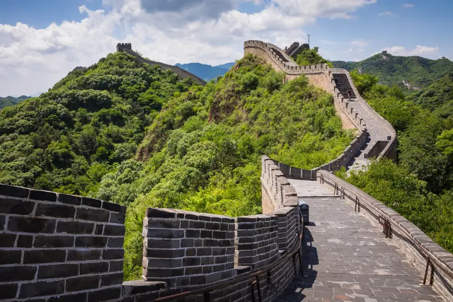

Se tardaron 200 años en terminarla, con grandes paredes con torres, que además servirían de carreteras para las tropas en las zonas de difícil acceso. Por tanto, la construcción de la muralla tal y como la conocemos hoy en día se le debe a Qin Shi Huangdi, cuya fama de emperador temido y cruel le precede.
